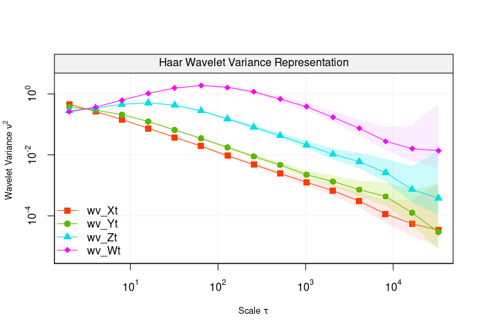

This repository holds the Wavelet Variance (wv) R package. This estimation technique computes the classical and robust wavelet variance for time series and regular lattices.
Below are examples of the capabilities of the wv package.
Install Instructions
To install the wv package, there is currently one option: GitHub (Developmental).
Recommended R Interface
We firmly recommend that any users of this package use the RStudio IDE over the default R GUI.
Installing the package through GitHub (Developmental)
For users who are interested in having the latest and greatest developments withing wavelets or GMWM methodology, this option is ideal. Though, there is considerably more work that a user must do to have a stable version of the package. The setup to obtain the development version is platform dependent.
Specifically, one must have a compiler installed on your system that is compatible with R.
For help on obtaining a compiler consult:
Depending on your operating system, further requirements exist such as:
OS X
Some user report the need to use X11 to suppress shared library errors. To install X11, visit xquartz.org
Linux
Both curl and libxml are required.
For Debian systems, enter the following in terminal:
sudo apt-get install curl libcurl3 libcurl3-dev libxml2 libxml2-devFor RHEL systems, enter the following in terminal:
sudo yum install curl curl-devel libxml2 libxml2-devAll Systems
With the system dependency taken care of, we continue on by installing the R specific package dependencies and finally the package itself by doing the following in an R session:
# Install dependencies
install.packages(c("RcppArmadillo","ggplot2","reshape2","devtools","knitr","rmarkdown"))
# Install the package from GitHub without Vignettes/User Guides
devtools::install_github("SMAC-Group/wv")Discrete Wavelet Transformation
# Set seed for reproducibility
set.seed(999)
# Simulate a Gaussian random walk
n = 10^3
Xt = cumsum(rnorm(n))For the moment this method will only work with Haar wavelets.
# DWT
Xt.dwt = dwt(Xt)
#> Warning in dwt(Xt): The data has been truncated so that it is divisible by
#> `nlevels` (e.g. 2^*)
# Summary of Discrete Wavelet Coefficients
summary(Xt.dwt)
#>
#> Results of DWT using haar filter with 8 levels:
#> Displaying only the first 6 coefficients...
#> Level 1 Wavelet Coefficients
#> -0.9281198 0.1909687 -0.4002392 -0.8957566 -0.7926733 0.09473632 ...
#> Level 2 Wavelet Coefficients
#> 0.2739394 -2.795066 0.8319477 0.3625764 -0.08550498 0.108777 ...
#> Level 3 Wavelet Coefficients
#> -2.384147 2.388987 -2.733086 -1.928826 -2.133592 -2.809311 ...
#> Level 4 Wavelet Coefficients
#> -6.282995 -5.729953 -7.616116 1.635971 1.2219 4.605007 ...
#> Level 5 Wavelet Coefficients
#> -10.03819 -6.631445 -0.6948675 -19.01644 12.1667 -5.350667 ...
#> Level 6 Wavelet Coefficients
#> -23.08426 -18.32217 18.40802 -8.680854 -4.335243 6.224648 ...
#> Level 7 Wavelet Coefficients
#> -34.68146 -7.485961 -5.448519 -30.51181 ...
#> Level 8 Wavelet Coefficients
#> -50.81154 1.13322 ...
# Plot of Discrete Wavelet Coefficients
plot(Xt.dwt)
Discrete Wavelet Transform (DWT) for scales 1 to 4 for a simulated Gaussian white noise.
Maximum Overlap Discrete Wavelet Transformation
# MODWT
Xt.modwt = modwt(Xt)
# Summary of Maximum Overlap Discrete Wavelet Coefficients
summary(Xt.modwt)
#>
#> Results of MODWT using haar filter with 9 levels:
#> Displaying only the first 6 coefficients...
#> Level 1 Wavelet Coefficients
#> -0.6562798 0.397592 0.1350352 -0.1386532 -0.2830119 -0.9393291 ...
#> Level 2 Wavelet Coefficients
#> 0.1369697 0.2645046 -0.2126415 -0.822003 -1.397533 -1.344998 ...
#> Level 3 Wavelet Coefficients
#> -0.8429231 -1.362249 -2.044266 -1.991537 -1.571604 -0.827054 ...
#> Level 4 Wavelet Coefficients
#> -1.570749 -1.175945 -0.7167598 -0.3172241 -0.04720348 0.01135659 ...
#> Level 5 Wavelet Coefficients
#> -1.774519 -1.731545 -1.702113 -1.711879 -1.649612 -1.530804 ...
#> Level 6 Wavelet Coefficients
#> -2.885532 -2.821419 -2.829503 -2.839451 -2.783538 -2.726905 ...
#> Level 7 Wavelet Coefficients
#> -3.065437 -3.069304 -3.063743 -3.03344 -2.997907 -2.955661 ...
#> Level 8 Wavelet Coefficients
#> -3.175721 -3.114701 -3.064177 -3.0097 -2.956361 -2.910441 ...
#> Level 9 Wavelet Coefficients
#> -6.967706 -6.925613 -6.884283 -6.838645 -6.79024 -6.735489 ...
# Plot of Maximum Overlap Discrete Wavelet Coefficients
plot(Xt.modwt, index = "all")
Maximum Overlap Discrete Wavelet Transform (MODWT) for scales 1 to 9 for a simulated Gaussian white noise.
Wavelet Variance
# Set seed for reproducibility
set.seed(999)
n = 10^4
# Simulate White noise
WN = rnorm(n)
# Simulate Random walk
RW = cumsum(rnorm(n))
# Plot WV
par(mfrow = c(1,2), mar = c(4,5,1,1))
plot(wvar(WN), main = "White noise")
plot(wvar(RW), main = "Random walk", legend_position = NULL)
Wavelet variance of two simulated processes, i.e white noise (left panel) and random waLk (right panel).
# Add contamination
gamma = 0.01
RW2 = RW
RW2[sample(1:n,round(gamma*n))] = rnorm(round(gamma*n),0,5)
par(mfrow = c(1,2), mar = c(4,5,1,1))
robust_eda(RW)
robust_eda(RW2, legend_position = NULL)
n = 10^5
Xt = arima.sim(n = n, list(ar = 0.10))
Yt = arima.sim(n = n, list(ar = 0.35))
Zt = arima.sim(n = n, list(ar = 0.70))
Wt = arima.sim(n = n, list(ar = 0.95))
wv_Xt = wvar(Xt)
wv_Yt = wvar(Yt)
wv_Zt = wvar(Zt)
wv_Wt = wvar(Wt)
compare_wvar(wv_Xt, wv_Yt, wv_Zt, wv_Wt)
User Guides
Various guides ship with package or are available on http://smac-group.com/ to provide insight into how to use the different methods. At the present time, the following vignettes are available:
- Process to Haar Wavelet Variance (Online)